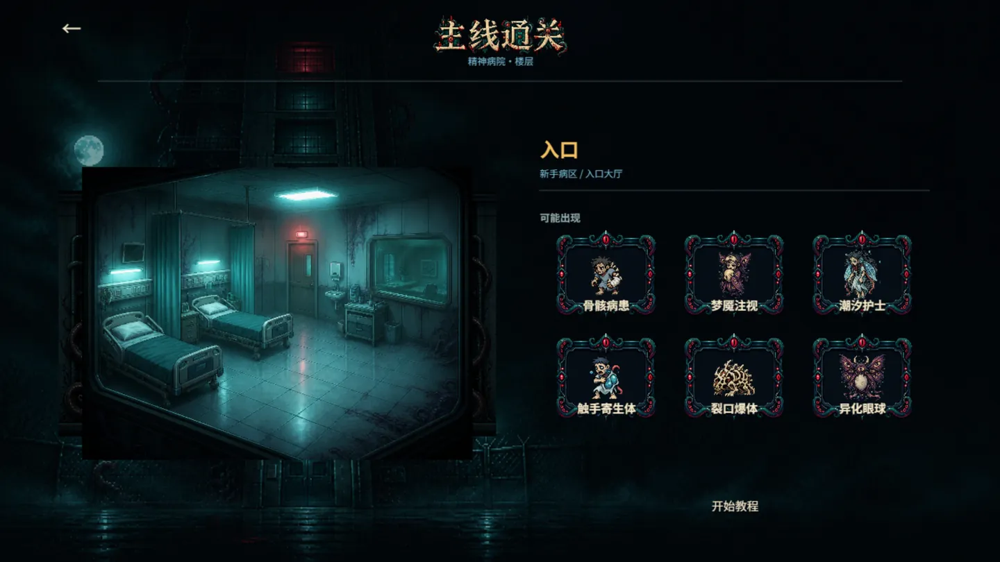
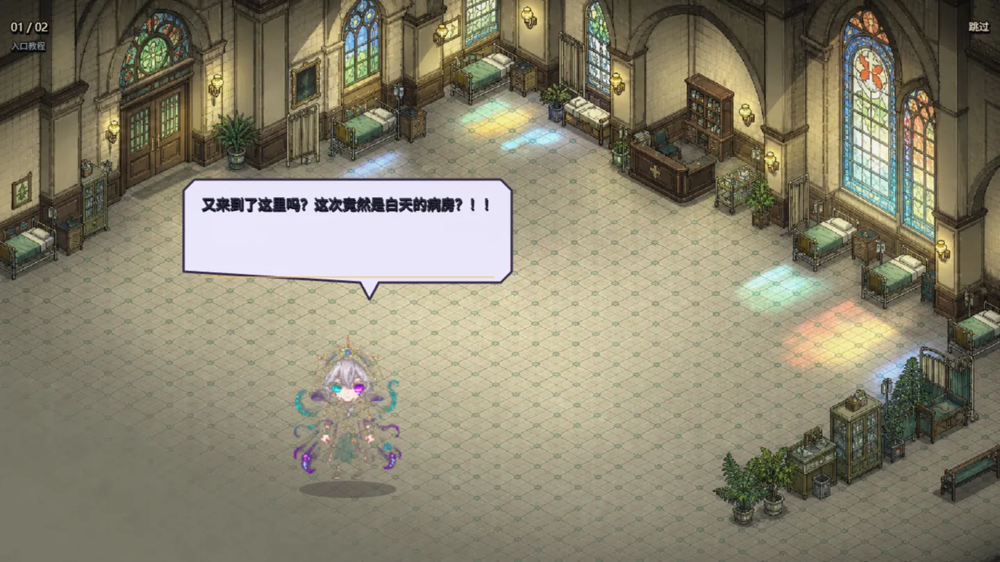
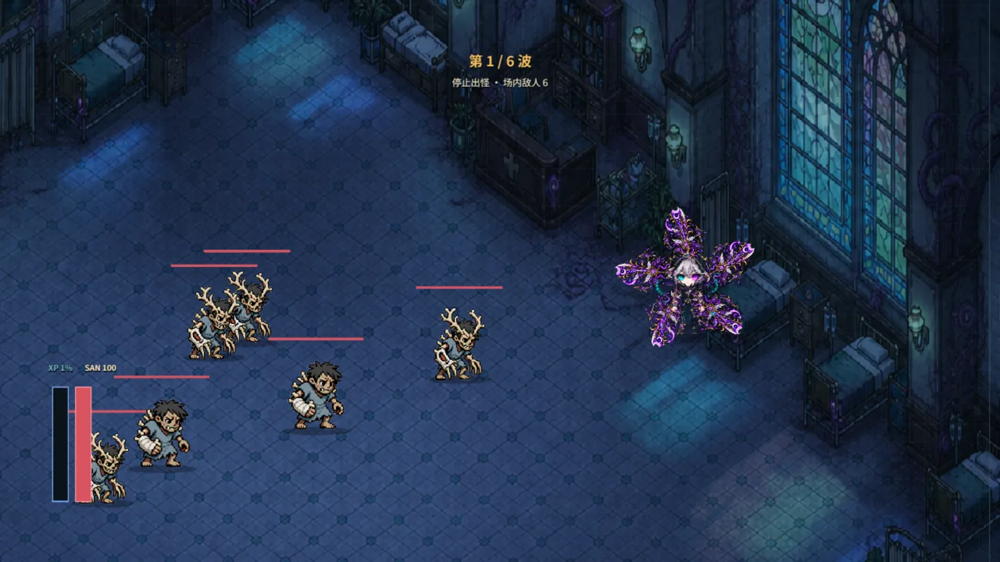
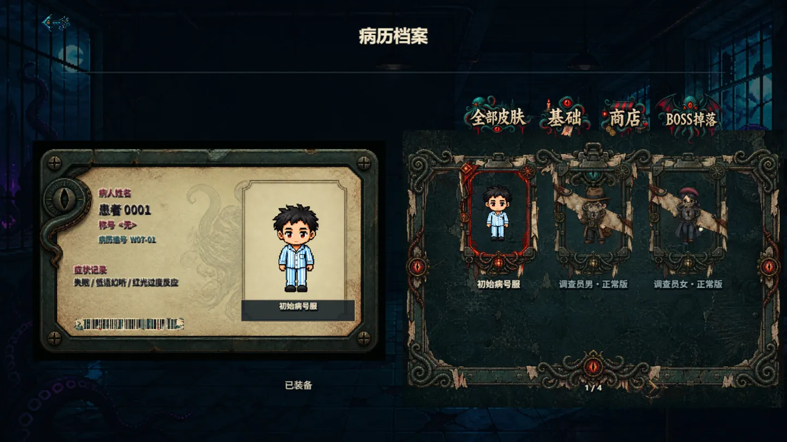

我在精神病院斩神
克苏鲁式像素 Roguelike，横屏自动战斗。你是「患者 0001」， 要一路砍穿 30 层病区——打得越久，SAN 值掉得越快。

它是什么
一句话：在病院里活得更久，代价是变得不再像人。
自动战斗把手腾出来做走位，
剩下的所有压力都压在一个数值上——SAN。
UI 全部做成病历
角色页不是「属性面板」，是一张病人档案：患者 0001、绰号 <光>、病历编号 W07-01， 症状记录写着「失聪 / 低语幻听 / 红光过敏反应」。武器页叫武器皮肤，剑、枪、鞭、炮分四类， 每一把都像从病院里捡来的。症状记录既是设定，也是皮肤和武器的解锁条件——两件事长在同一张纸上。
SAN 掉到 30 就异化
SAN 值随战斗持续下滑，低于 30 自动进入异化：攻击提升、出怪压力提升、护盾吸收下降。 玩家得自己选：继续吃这个强度红利，还是想办法把理智拉回来。越打越强的那条路，和越打越危险的是同一条。
30 层的节奏表
主线每层 10 波，第 7 波是本层小首领，打完才允许往下走；每日挑战 50 波，最后是月度首领。 前十层用同一套病区素材换光照和敌人配比，同一间病房，白天和夜里是两种打法。
首屏只加载必需资源
武器、主线、档案、每日挑战、战斗资源按界面分组懒加载。首屏只等标题和一屏病房， 点进战斗的那几秒才补该层需要的贴图。首屏只等标题和一屏病房，点进战斗那几秒才补该层贴图。
卡在哪儿
这几处当时卡了很久，有的到现在也没弄好。
- 自动攻击，会不会玩着太省事
- 会。第一版纯自动，打到第三层就困了。后来把操作压成「去哪、捡不捡」两件事，用走位和掉落逼人做选择。没根治，只是让无聊来得晚一点。
- 三周做不出 30 层内容
- 前十层用同一套病区素材，换光照、敌人配比和波次数量拉开差别。省下来的时间全砸在每层第 7 波的小首领上。
- 对白一插，节奏就断
- 只在进层和换层时出现，战斗里一句不插。想读的点开看，不想读的点跳过。被跳过最多的是开场那段两百字独白，我后来也没改。
- 商店要不要接支付
- 没接。商店只做到能看能装备，掉落的皮肤能预览不能买。真要上线得先处理退款和审核，这部分空着。
界面实拍
全部来自可运行版本，非设计稿。点开可放大。




怎么做的
策划、实现、验收由我一个人串完，AI 负责写代码。
工程按「场景表现 / 领域规则 / 基础设施 / 平台适配」四层拆开，src/main.ts
只做一件事：加载主场景。数值、武器成长、SAN 规则都在领域层，改平衡不用碰渲染。
资源走 Builda 的宿主能力：有 CDN 清单就从清单读，本地预览用项目里的 assets 兜底，
地址不写进游戏逻辑。开发模式用 ?dev=1 打开，能直接跳楼层、调波次、开无敌，
自测一遍 30 层不用真的打三小时。
验收标准是我自己定的：连续打三层不掉帧、每层第七波必须能看出「这层不一样」、 手机横屏下所有按钮单手够得到。
说明：试玩版素材由 AI 生成并按统一像素规格后处理，代码由 AI 协作完成， 关卡结构、数值与所有界面决策由我完成。